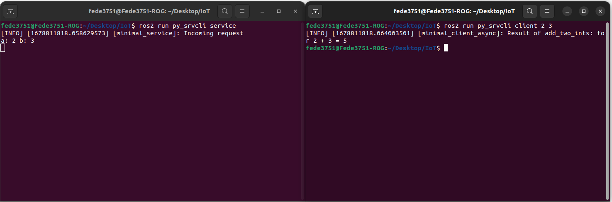

<!-- <p class="section">Using services</p>

			<p>
				We have seen how to write and use topics by writing a script. This leaves us only with services and actions to tackle.<br><br>

				Let's now try to write a simple service and client in Python.<br>
				We will follow an example just like we did before. But this time from here on this page.

				<p class="code">
					ros2 pkg create --build-type ament_python py_srvcli --dependencies rclpy example_interfaces
				</p>

				This time, we are specifying a dependency that our application needs in order to run the service structure.<br>
				This command is not required assuming you have everything already installed, but it is a good practice to specify what
				your package needs in order to run.<br><br>

				If for some reasons you realize that your package has further dependencies after you created it, you can specify them manually
				by writing in the <span class="snippet">package.xml</span> file, it should be kinda intuitive how to edit it.<br><br>

				Now create a new file in <span class="snippet">/src/py_srvcli/py_srvcli</span> called
				<span class="snippet">service_member_function.py</span>, this will be the file were we will write our
				service server.<br><br>

				The code of the node is the following. It is highly reccomended to write it line by line instead of copying it, so you can get a good understanding
				of what we're doing.

				<p class="code">
					from example_interfaces.srv import AddTwoInts<br><br>

					import rclpy<br>
					from rclpy.node import Node<br><br><br>


					class MinimalService(Node):<br><br>

					&emsp;&emsp;	def __init__(self):<br>
					&emsp;&emsp;&emsp;&emsp;		super().__init__('minimal_service')<br>
					&emsp;&emsp;&emsp;&emsp;		self.srv = self.create_service(AddTwoInts, 'add_two_ints', self.add_two_ints_callback)<br><br>

					&emsp;&emsp;	def add_two_ints_callback(self, request, response):<br>
					&emsp;&emsp;&emsp;&emsp;		response.sum = request.a + request.b<br>
					&emsp;&emsp;&emsp;&emsp;		self.get_logger().info('Incoming request\na: %d b: %d' % (request.a, request.b))<br><br>

					&emsp;&emsp;&emsp;&emsp;		return response<br><br>


					def main():<br>
					&emsp;&emsp;	rclpy.init()<br><br>

					&emsp;&emsp;	minimal_service = MinimalService()<br><br>

					&emsp;&emsp;	rclpy.spin(minimal_service)<br><br>

					&emsp;&emsp;	rclpy.shutdown()<br><br><br>


					if __name__ == '__main__':<br>
					&emsp;&emsp;	main()
				</p>

				Let's comment the new things we're seeing in this script.<br><br>

				The imported libraries are the same as before for what regards ROS.<br>
				This time though, we are also importing an example interface called <span class="snippet">AddTwoInts</span> from the
				<span class="snippet">example_interfaces</span> package.<br><br>

				This time, we create a service server using the <span cass="snippet">Node</span> method <span class="snippet">create_service()</span>.<br>
				Here, we specify, once again, the message type for the service, the service name, and the callback function.<br>
				Things are not so different from writing for a topic.<br><br>

				The callback <span class="snippet">add_two_ints_callback()</span> takes in input, by default, the request and the response.<br><br>

				Things may get confusing here, but everything may make more sense if we are able to understand how an <span class="snippet">AddTwoInts</span>
				message is structured. Do you remember how to do it?

				<p class="code">
					ros2 interface show example_interfaces/srv/AddTwoInts
				</p>

				

				This tells us the fields of a request, and those of the response!<br><br>

				Now we can go back to our, code, and it should be clear what the following snippet does:

				<p class="code">
					&emsp;&emsp;	def add_two_ints_callback(self, request, response):<br>
					&emsp;&emsp;&emsp;&emsp;		response.sum = request.a + request.b<br>
					&emsp;&emsp;&emsp;&emsp;		self.get_logger().info('Incoming request\na: %d b: %d' % (request.a, request.b))<br><br>

					&emsp;&emsp;&emsp;&emsp;		return response
				</p>

				The rest of the code is exactly like what we have seen before!<br><br>


				We now need to add an entry point for this service, just like we did before for the two talker and listener nodes.<br>
				You should be able to do it by now.<br><br>

				Let's now write the code for our client of the service.<br>
				Create a file named <span class="snippet">client_member_function.py</span> in the <span class="snippet">src/py_srvcli/py_srvcli</span> folder, and write in it the following code:

				<p class="code">

					import sys<br><br>

					from example_interfaces.srv import AddTwoInts<br>
					import rclpy<br>
					from rclpy.node import Node<br><br><br>


					class MinimalClientAsync(Node):<br><br>

					&emsp;&emsp;	def __init__(self):<br>
					&emsp;&emsp;&emsp;&emsp;		super().__init__('minimal_client_async')<br>
					&emsp;&emsp;&emsp;&emsp;		self.cli = self.create_client(AddTwoInts, 'add_two_ints')<br>
					&emsp;&emsp;&emsp;&emsp;		while not self.cli.wait_for_service(timeout_sec=1.0):<br>
					&emsp;&emsp;&emsp;&emsp;&emsp;&emsp;			self.get_logger().info('service not available, waiting again...')<br>
					&emsp;&emsp;&emsp;&emsp;		self.req = AddTwoInts.Request()<br><br>

					&emsp;&emsp;	def send_request(self, a, b):<br>
					&emsp;&emsp;&emsp;&emsp;		self.req.a = a<br>
					&emsp;&emsp;&emsp;&emsp;		self.req.b = b<br>
					&emsp;&emsp;&emsp;&emsp;		self.future = self.cli.call_async(self.req)<br>
					&emsp;&emsp;&emsp;&emsp;		rclpy.spin_until_future_complete(self, self.future)<br>
					&emsp;&emsp;&emsp;&emsp;		return self.future.result()<br><br><br>


					def main():<br>
					&emsp;&emsp;	rclpy.init()<br><br>

					&emsp;&emsp;	minimal_client = MinimalClientAsync()<br>
					&emsp;&emsp;	response = minimal_client.send_request(int(sys.argv[1]), int(sys.argv[2]))<br>
					&emsp;&emsp;	minimal_client.get_logger().info(<br>
					&emsp;&emsp;&emsp;&emsp;		'Result of add_two_ints: for %d + %d = %d' %<br>
					&emsp;&emsp;&emsp;&emsp;		(int(sys.argv[1]), int(sys.argv[2]), response.sum))<br><br>

					&emsp;&emsp;	minimal_client.destroy_node()<br>
					&emsp;&emsp;	rclpy.shutdown()<br><br><br>


					if __name__ == '__main__':<br>
					&emsp;&emsp;	main()
				</p>

				<br>Let's comment the most interesting parts of this code.

				<p class="code">
					&emsp;&emsp;&emsp;&emsp;		while not self.cli.wait_for_service(timeout_sec=1.0):<br>
					&emsp;&emsp;&emsp;&emsp;&emsp;&emsp;			self.get_logger().info('service not available, waiting again...')<br>
					&emsp;&emsp;&emsp;&emsp;		self.req = AddTwoInts.Request()
				</p>

				With the first two lines, we are telling our node to wait for the service to be available before continuing with the execution.<br>
				After that, we instantiate our request message by using the constructor <span class="snippet">Request()</span> of our <span class="snippet">AddTwoInts</span> interface.<br><br>

				The other interesting snippet is how the service is called:

				<p class="code">
					&emsp;&emsp;	def send_request(self, a, b):<br>
					&emsp;&emsp;&emsp;&emsp;		self.req.a = a<br>
					&emsp;&emsp;&emsp;&emsp;		self.req.b = b<br>
					&emsp;&emsp;&emsp;&emsp;		self.future = self.cli.call_async(self.req)<br>
					&emsp;&emsp;&emsp;&emsp;		rclpy.spin_until_future_complete(self, self.future)<br>
					&emsp;&emsp;&emsp;&emsp;		return self.future.result()

				</p>

				Here, we are configuring our request and then using it in the function <span class="snippet">call_async()</span>.<br>
				This allows the node to call a service without blocking the rest of the execution of the code.
				<strong>Never</strong> use the function <span class="snippet">call()</span>, unless you are ready to mess with Python Threading.<br><br>
				
				We then use <span class="snippet">spin_until_future_complete()</span> to wait for the service to answer and give us a result.
				Which we then obtain using the <span class="snippet">future.result()</span> function.<br><br>

				The rest of the code should be kinda self explanatory and not too much different from what we have already seen.<br>
				Feel free to ask questions if something is still unclear up to this point.<br><br>

				
				<p class="subsection">Linking again and running</p>

				Now that we also wrote our client, we are ready to add the entry point also for it. After that, we are finally ready to test our example.<br>
				Go back to the main folder and build the package again (remember that you may need to check the dependencies with <span class="snippet">rosdep</span> before being able to build).<br><br>

				Now, after sourcing your package, you should be able to run your service with the following commands.<br>
				First, start the service with:

				<p class="code">
					ros2 run py_srvcli service
				</p>

				And then make a request to it with the client node:

				<p class="code">
					ros2 run py_srvcli client 2 3
				</p>

				This should output something like this:

				

			</p>


			<p class="section">Excercise 3 - <span class="rainbow-text">Rainbow</span> Turtle!</p>

			<p>
				We now know how to write services in ROS.<br>

				Let's go back to the excercise we did before and complicate things a little bit!<br><br>

				You are here asked to change the script in Excercise 2 as follows:<br>
				when the turtle reaches a corner, the color of the line the turtle leaves behind should change!<br><br>

				There is one particular service responsable for the color of the line, try to find it out by tinkering
				with all the commands we have seen so far (looking online for more documentation, if you are having problems, is totally fair)!<br><br>

				Some tips may be needed here, as using topics and services together can create lots of problems without knowing how ROS works under the hood.
				The most important thing you need to know: you should <strong>NEVER call a spin action for a node that is already spinning</strong>, that can create problems in the 
				scheduler of ROS.<br><br>
				If you want to see the result of a service from a node, but that node is already spinning, you may use the function
				<span class="snippet">future.add_done_callback()</span>, which allows you to specify a function which gets executed
				when the service has answered your request. You shouldn't neeed the function in this excercise, but is good to know its existence for the <i>future</i>.<br><br>

				Good luck!<br><br>

				Your solution should look something like this:

				

				
				<input class="spoilerbutton" type="button" value="Show" onclick="this.value=this.value=='Show'?'Hide':'Show';">
				<div class="spoiler">
					<div>
						<p>
							Solution will be given during the lecture and will be available here later today!
						</p>
					</div>
				</div>
	

			</p>

			<p class="section">Creating your own Interfaces</p>

			<p>
				If you paid attention to the code carefully, you may have noticed that the code we wrote is using a message of type
				<span class="snippet">AddTwoInts</span>. In order to be able to comfortably work with ROS, you may be 
				required to be able to implement custom messages to pass to your services and topics. This is what we are going to cover in this part!<br><br>

				We will use the same workspace we used so far to test our new interface, so just go back to your
				<span class="snippet">src</span> folder and type:

				<p class="code">
					ros2 pkg create --build-type ament_cmake tutorial_interfaces
				</p>

				This time, we will have to use, sadly, a CMake package. There is currently no way to generate
				<span class="snippet">.msg</span> and <span class="snippet">.srv</span> files in a pure Python package. <br><br>

				What we will do, in order to not use C++, is to define our interfaces in a separate CMake package,
				and then use them inside another Python package.<br><br>

				Interfaces should be defined in their own directories in the package folder, so, just type:

				<p class="code">
					cd tutorial_interfaces <br><br>
					mkidr msg<br>
					mkdir srv
				</p>

				We can start defining our interfaces by creating files in their own folder.<br><br>
				
				Open the <span class="snippet">msg</span> folder, and create a file named <span class="snippet">Num.msg</span>.<br>
				Just open it, and write the following line:

				<p class="code">
					int64 num
				</p>

				And also another file called <span class="snippet">Sphere.msg</span> with the following content:

				<p class="code">
					geometry_msgs/Point center<br>
					float64 radius
				</p>

				This should give you an idea on how to define custom messages that are composed of other already
				defined messages.<br><br>

				Let's now try to create a srv interface!<br><br>

				Go back, and open the <span class="snippet">srv</span> folder. Inside of it, create a file called
				<span class="snippet">AddThreeInts.srv</span> and write in it the following lines:

				<p class="code">
					int64 a<br>
					int64 b<br>
					int64 c<br>
					---<br>
					int64 sum
				</p>

				Here, we are defining a service message which takes in input three integers (<span class="snippet">a</span>, <span class="snippet">b</span> and <span class="snippet">c</span>)
				and returns a single value <span class="snippet">sum</span>.<br><br><br>


				What we have to do now is just to link this new interfaces so that <span class="snippet">colcon</span>
				is able to find them when we buid our package.<br><br>

				In the folder of our interface package, open the file <span class="snippet">CmakeList.txt</span> and
				add the following lines:

				<p class="code">
					find_package(geometry_msgs REQUIRED)<br>
					find_package(rosidl_default_generators REQUIRED)<br><br>

					rosidl_generate_interfaces(${PROJECT_NAME}<br>
					&emsp;&emsp;	"msg/Num.msg"<br>
					&emsp;&emsp;	"msg/Sphere.msg"<br>
					&emsp;&emsp;	"srv/AddThreeInts.srv"<br>
					&emsp;&emsp;	DEPENDENCIES geometry_msgs # Add packages that above messages depend on, in this case geometry_msgs for Sphere.msg<br>
					)
				</p>

				All that is left now is to specify the dependencies our package relies on.<br>
				In order to do that, we will have to edit the file <span class="snippet">package.xml</span>.<br><br>

				Interfaces rely on <span class="snippet">rosidl_default_generators</span> in order to generate
				language-specific code, so we will have to add it to our execution-stage dependencies using the tag
				<span class="snippet">&#60;exec_depend&#62;</span>.<br>
				This package belongs to the dependency group <span class="snippet">rosidl_interface_packages</span>,
				which can be defined using the tag <span class="snippet">&#60;member_of_group&#62;</span>.<br>
				Additionally, we have to define our dependency to <span class="snippet">geometry_msgs</span>.<br><br>

				Add the following lines to <span class="snippet">package.xml</span>:

				<p class="code">
					&#60;depend&#62;geometry_msgs&#60;/depend&#62;<br><br>

					&#60;build_depend&#62;rosidl_default_generators&#60;/build_depend&#62;<br>
					&#60;exec_depend&#62;rosidl_default_runtime&#60;/exec_depend&#62;<br>
					&#60;member_of_group&#62;rosidl_interface_packages&#60;/member_of_group&#62;
				</p>
				

				This complete everything you need to do in order to implement your interfaces.<br><br>
				
				Go back to the main folder of your workspace, and try to build everything like we always did.<br>
				If you now source you new package, you should be able to see your interfaces with the command:

				<p class="code">
					ros2 interface show [interface_name]
				</p>

				Great! this complete almost everything we need to know about interfaces!<br><br>

				If you wish to build interfaces and write Python code in the same package, you can build your package
				using the <span class="snippet">--build type</span> set to <span class="snippet"> ament_cmake_python</span>.<br>
				There is currently no plan to discuss these type of packages. For the rest of the course we will mainly
				use different packages like	we just did.<br><br>

				If you want to test your new interfaces, you can try to edit your service and client script we wrote before
				to take <span class="snippet">AddThreeInts</span> in input. If you did the exercises before, it shouldn't
				be hard at all. Give it a try!<br><br>

			</p>
			<p class="subsection">Conclusions and <i>future</i> lectures</p>
			<p>
				This complete everything we needed to see for this lecture.<br>
				We're getting really close to be able to fully control a ROS robot.<br><br>
			

				What is left now is to learn how to write actions (and some other little things, but nothing fancy).<br>
				This will be the main focus of the next lecture. After that, we will be ready to introduce Gazebo
				and finally start having fun with simulated robots!<br><br>

				See you soon!

				

			</p>

			<div class="to_be_continued"></div> -->